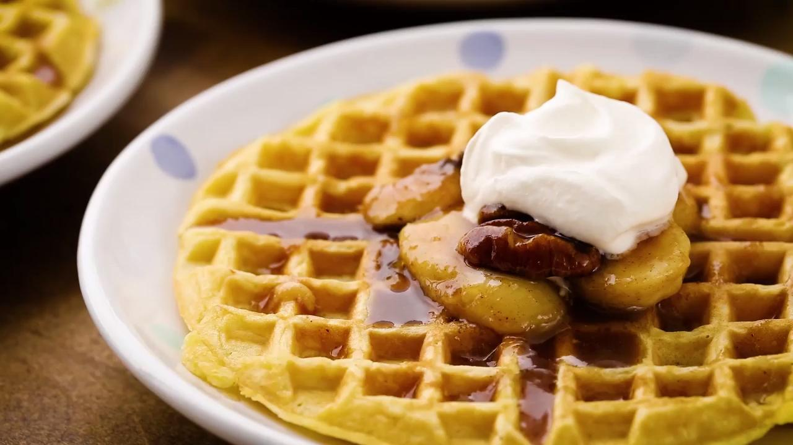

Bananas Foster Waffles

As a special treat for my mother, I created this recipe, which includes
one of her favorite desserts and one of her favorite breakfast items. This creation
also goes great with French toast, so make this as a special treat to your mom or
any mom. Also a nice way to impress anyone with a special breakfast. I hope you
enjoy as much as my mom did.
Ingredients
- 1⅓ cups all-purpose flour
- ¾ teaspoon baking soda
- 2 teaspoons white sugar
- ¼ teaspoon salt
- 3 eggs
- 1½ teaspoons vanilla extract
- 1⅓ cups milk
- ⅓ cup melted butter
- ¼ cup butter
- ⅔ cup brown sugar
- 2 teaspoons rum flavor extract
- 2 teaspoons vanilla extract
- ½ teaspoon ground cinnamon
- ¼ cup whole pecans
- ½ cup pancake syrup (i.e. Mrs. Butterworth's)
- 3 bananas, cut into ½ inch slices
- 1 cup heavy cream
- ¼ teaspoon vanilla extract
- tablespoon confectioner's sugar
Steps
- Preheat a Belgium waffle iron. Whisk together the flour, baking soda, baking powder, white sugar, and salt in a bowl; set aside.
- Whisk together the eggs, 1½ teaspoons vanilla extract, and milk in a bowl. Stir in the melted butter and flour mixture until a slightly lumpy batter forms. Cook the waffles in the preheated iron until steam stops coming out of the seam, about 2 minutes.
- Meanwhile, melt ¼ cup of butter in a saucepan over medium heat. Stir in the brown sugar, rum extract, 2 teaspoons vanilla extract, and cinnamon. Bring to a simmer, the stir in the pecans and continue simmering for 1 minute. Stir in the pancake syrup and bananas, continue cooking until the bananas soften, about 4 minutes.
- Beat the heavy cream, ¼ teaspoon of vanilla and confectioners' sugar with an electric mixer in a medium bowl until firm peaks form.
- Once waffles are done, spoon bananas Foster sauce over waffle and top with a dollop of whip cream.